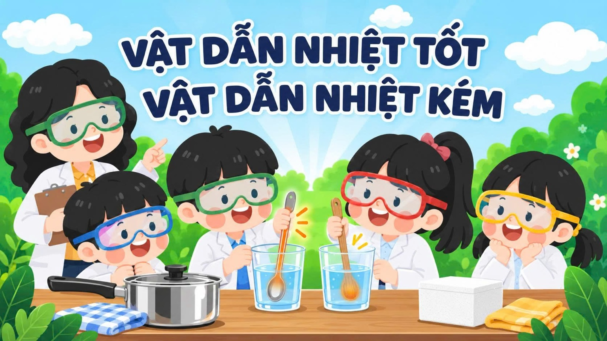
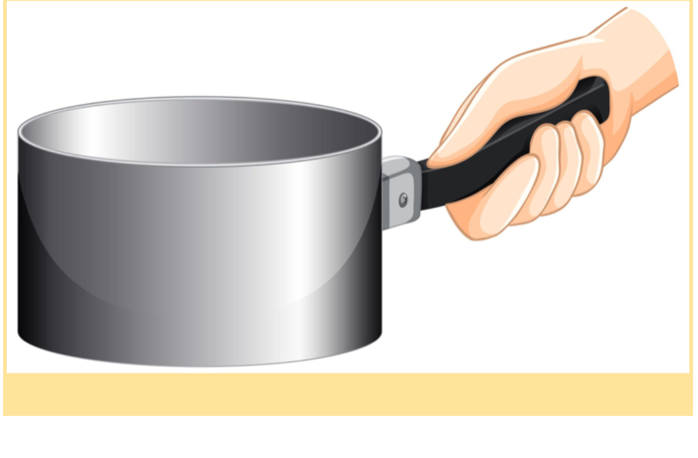
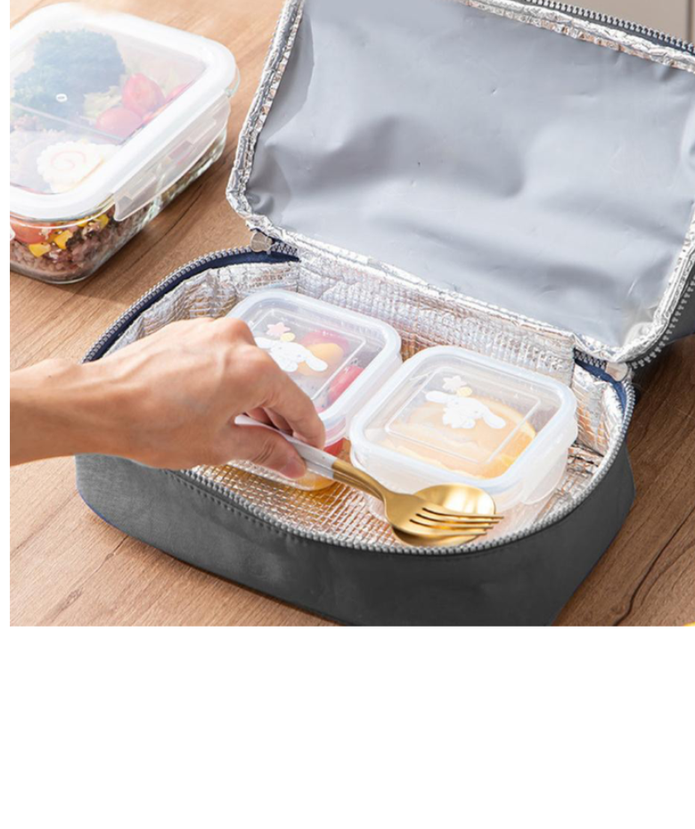

Môn: Khoa học lớp 4
🔎 Khám phá nhiệt và vật liệuCác bài học
Chọn bài học để bắt đầu khám phá kiến thức.
Em học theo đúng trình tự 3 bước dưới đây. Mỗi bước sẽ mở phần tiếp theo sau khi em hoàn thành nội dung trước đó.
Nội dung ôn tập sẽ được bổ sung
Phần này đang được chuẩn bị.
Nội dung mở rộng sẽ được bổ sung
Phần này đang được chuẩn bị.
1. Trong video, Lan gặp vấn đề gì?
2. Theo em, vì sao chai sữa ấm lại nguội dần?
3. Để giúp bình/chai sữa giữ ấm được lâu hơn, em nghĩ nên thiết kế sản phẩm nào?
Video ngắn giới thiệu 3 điều chúng ta sẽ tìm hiểu: hướng truyền nhiệt, sự khác nhau giữa vật liệu và cấu tạo túi/hộp giữ nhiệt.
Sau video 2, em sẽ khám phá:
1. Nhiệt truyền như thế nào?
2. Các vật liệu truyền nhiệt có giống nhau không?
3. Hộp giữ nhiệt cần những bộ phận và vật liệu có đặc điểm gì?
Tình huống: Dự đoán
Trong một cốc nước ấm, người ta đặt ba chiếc thìa có cán làm bằng ba vật liệu khác nhau: kim loại, gỗ và nhựa.
Theo em, nếu để một lúc, cán thìa nào sẽ nóng lên nhanh hơn?
Để kiểm tra dự đoán của mình, em hãy suy nghĩ xem chúng ta cần tiến hành thí nghiệm như thế nào để biết cán thìa làm bằng vật liệu nào nóng lên nhanh hơn?
Dụng cụ: Một cốc nước ấm; một chiếc thìa kim loại; một chiếc thìa gỗ; một chiếc thìa nhựa; đồng hồ đếm ngược.
Câu hỏi 1: Em sẽ đặt các chiếc thìa như thế nào?
Câu hỏi 2: Để kết quả so sánh công bằng, em cần lưu ý điều gì?
“Bây giờ, hãy cùng quan sát một thí nghiệm để kiểm chứng dự đoán và cách làm mà em vừa đề xuất nhé!”
Câu hỏi 1: Qua thí nghiệm, em nhận thấy cán thìa nào nóng lên nhanh hơn?
Câu hỏi 2: Dựa vào video thí nghiệm, em quan sát điều gì để so sánh khả năng dẫn nhiệt?
Em hãy ghi nhớ!
- Cán thìa kim loại nóng lên nhanh hơn.
- Cán thìa gỗ và nhựa nóng lên chậm hơn.
Kết luận:
- Các kim loại như bạc, đồng, vàng, nhôm, sắt,... dẫn nhiệt tốt.
- Gỗ, nhựa, bông, len, xốp, thủy tinh dẫn nhiệt kém.
- Vật dẫn nhiệt tốt truyền nhiệt nhanh hơn; vật dẫn nhiệt kém truyền nhiệt chậm hơn trong cùng điều kiện.
Hoạt động: Đố bạn vì sao?
Tình huống 1: Khi quan sát những chiếc nồi trong gia đình, em có thể thấy phần cán thường được làm bằng nhựa hoặc gỗ thay vì kim loại.

Câu hỏi 1. Theo em, vì sao người ta lựa chọn những vật liệu này để làm cán nồi?
Tình huống 2
Vào mùa lạnh, mọi người thường mặc áo len. Theo em vì sao?
Tình huống 3
Nếu muốn làm một chiếc túi giữ nhiệt để đựng thức ăn, em sẽ lựa chọn vật liệu nào trong các vật liệu sau và giải thích vì sao?
Bông, xốp, vải len, kim loại.

Em hãy chọn vật liệu phù hợp:
Hãy giải thích ngắn gọn vì sao em chọn vật liệu đó để làm túi giữ nhiệt.
Hãy bấm từng lớp của túi/hộp để khám phá.
Cách kết hợp nào dưới đây giúp giữ ấm tốt hơn?
Thử thách STEM
Đề xuất một túi/hộp giữ nhiệt mini bao quanh chai mẫu, giúp nước trong chai nguội chậm hơn.
- Đựng vừa chai mẫu.
- Có lớp vật liệu dẫn nhiệt kém.
- Có giấy bạc làm lớp lót.
- Có thể đóng – mở và lấy chai ra dễ dàng.
- Tương đối chắc chắn, an toàn, không có cạnh sắc.
1. Chọn vật liệu
Lớp lót bên trong: Giấy bạc
Em đã hoàn thành bài học trước giờ lên lớp!
Trên lớp, các thành viên sẽ chia sẻ ý tưởng, lựa chọn hoặc kết hợp thành bản thiết kế chung, sau đó chế tạo, thử nghiệm và cải tiến sản phẩm.
Học sinh:
Lớp:
Vật liệu vỏ ngoài:
Lớp giữ nhiệt:
Lớp lót: Giấy bạc
Cách đóng – mở:
Lí do: